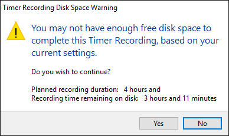

New features in this release
From Audacity Development Manual
- Details of all the major changes since 2.1.2 can be found in Release Notes 2.1.3.
Contents
- Transport improvements
- Pinned play/record head
- Scrubbing - user interface improved
- Timer Record - completion actions added
- Effects and Generators
- Stop and Do if paused - stops and carries out your action if you are paused
- Distortion effect - replaces Leveler and Hard Limiter
- Rhythm Track - replaces Click Track
- Sample Data Import
- Keyboard Shortcuts
- New menu items
- Audacity Tour Guide - includes some specialized features you may not know
- Additional new features
Transport improvements
Pinned play/record head
We have implemented the long-standing and popular feature request of a fixed and centered play/record head (called the "pinned head"). When the pinned head is selected the waveform scrolls continuously past the fixed head while you are playing or recording.
The pinned head can be selected by using the new button at the left of the Timeline. By default this is the familiar green downwards-pointing triangle (like the playhead) and the default behavior is the old familiar scrolling play/record head. The pinned head can also be selected in Tracks Preferences.
When pinned playback or recording is chosen, the playhead displays as a green drawing-pin (as shown in the image below) and the recording head displays as a red drawing-pin.

Clicking the drawing-pin reverts to default unpinned playback and recording, and the button will change back to the green triangle.
Scrubbing
For this release we have changed the way in which scrubbing works.
We have introduced a new Scrub Ruler which is on by default and sits just under the Timeline. You can turn it on or off from the right-click dropdown menu of the Timeline.
If you hover the mouse over the Scrub Ruler you will see the Scrub widget's green left- and right-pointing arrows appear (along with a tooltip if you continue to hover). Clicking anywhere in the Scrub Ruler, releasing the mouse button then moving the mouse left or right will start Scrubbing from there. Note that in this image the green scrub widget is to the right of the green triangle playhead, indicating that forwards scrubbing towards the pointer is taking place.

To stop scrub play and set the cursor at the current playback position, just click the Stop button  (or its shortcut SPACE).
(or its shortcut SPACE).
Stop and Set Cursor
The shortcut for Play/Stop and Set Cursor has changed from SHIFT + A to the simpler and easier to use X.
Timer Record
We have added some new features to improve Timer Record.
You can now specify optional actions on completion such as Save and/or Export, quit Audacity and, on Windows, shut down.

Audacity will now warn you in advance if it calculates that you have insufficient disk space for the length of your scheduled recording.
- 
Effects and Generators
Stop and Do if paused
A big improvement you will notice is that all effects plus edits and other functionality can now be actioned from paused state - Audacity will stop the audio and do the action or open the dialog requested. This should remove a common cause of confusion for our users.
Distortion Effect
We have introduced a new Distortion effect (which supersedes the "Leveller" and "Hard Limiter" effects found in earlier Audacity versions). Technically this effect is a waveshaper. The result of waveshaping is equivalent to applying non-linear amplification to the audio waveform. Preset shaping functions are provided, each of which produces a different type of distortion. Presets are provided which suggest typical settings for a wide range of uses.
Rhythm Track
The former Click Track generator has been updated and renamed to Rhythm Track with improved sounds and a new "Swing amount" control for unequal beat duration.
Sample Data Import
We have added a new Generator for Sample Data Import which reads numeric values from a plain ASCII text file and creates a PCM sample for each numeric value read.
Keyboard Shortcuts
There are two new keyboard shortcuts to navigate between labels: ALT + RIGHT to Move to Next Label and ALT + LEFT to Move to Previous Label. Use these shortcuts to move the editing position to the label, without opening the label for editing. If audio is already playing, playback jumps to the label requested, which is useful if you have split a recording into separate tracks using labels.
These new shortcuts also let screen readers for the blind read the label's name and its order in the labels in that track, a feature lacking in Audacity until now. There are no corresponding menu entries or buttons for these shortcuts.
Edit Menu
There are two new commands to aid making selections:
- Use to store the position of the editing cursor (or when there is active audio, to store the position of the playback or recording cursor).
- Subsequently, use to select from the editing cursor (or during active audio, from the position of the playback or recording cursor) to the stored cursor position.
Tracks Menu
Another new menu item is . Previous Audacity already let you type to create a label in the focused label track, but this feature made it easy to accidentally create a label when you really wanted to use shortcuts to play or act on the audio. Uncheck this new menu item (or make the same change in Tracks Preferences) to avoid that risk.
Audacity Tour Guide
We have added Audacity Tour Guide to this Manual. It tells you about a few of the core Audacity features and about some of the more specialized features you might not know where to find.
Additional new features
This page New features in this release - appendix gives an overview of further new functionality that has been introduced in Audacity 2.1.3
Links
> Audacity Release Notes 2.1.3 - detailed release notes for this release of Audacity